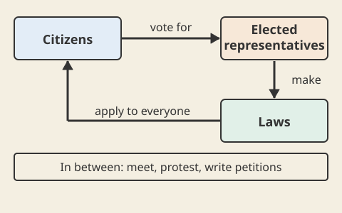

Gesellschaft und Politik
Mit einem KI-Tutor lernen
Ein KI-Tutor erklärt dir diese Seite und hilft dir bei den Aufgaben. Wähl deinen Assistenten:
Mit Claude öffnen Mit ChatGPT öffnen Mit Mistral Vibe öffnen
Du nutzt dein eigenes Konto beim Anbieter. Der Assistent ist kein Angebot von lernapps.net: lernapps liefert nur Inhalte und Aufgaben. Die Wahl gilt für alle Seiten, nur auf diesem Gerät.
Worüber wir sprechen
Nach dem Ende der Sklaverei kam eine neue Frage: Wie gehen Menschen miteinander um, wenn alle Rechte haben sollen? Dazu brauchst du ein paar Wörter. Vorher eine Frage an dich.
Aufgabe
Lösung
Alle entscheiden jede Frage selbst, Vertreter gibt es nicht.
In großen Ländern entscheiden meist gewählte Vertreter.
Es wird nur alle paar Jahre gewählt, mehr gehört nicht dazu.
Dazu gehören auch Freiheiten wie die Meinungsfreiheit.
Menschen entscheiden mit, meist über Vertreter, die sie wählen. richtige Antwort
Das ist der Kern einer Demokratie.
Demokratie heißt Mitentscheiden, meist über Vertreter.
Das kannst du danach: Du sprichst auf Englisch über Demokratie, Menschenrechte und Engagement. Du nennst zwei belegte Beispiele und sagst deine Meinung dazu.
Lesestück: Rights and taking part
- In a democracy, people take part in the decisions of their country. Usually they do this through representatives whom they choose freely in elections.
- Democracy needs more than election day. In the United States, the First Amendment to the Constitution protects the freedom of speech and of the press. It also protects the right of people to assemble, which means to meet peacefully, and to ask the government for changes. Such a request, often with many signatures, is called a petition.
- Human rights are rights that every person has, in every country. On 10 December 1948 the General Assembly of the United Nations proclaimed the Universal Declaration of Human Rights in Paris. It has thirty articles and has been translated into more than five hundred languages.
- Article 1 says that all human beings are born free and equal in dignity and rights. Article 2 says that these rights belong to everyone, without distinction of any kind, for example race, colour, sex, language or religion. Other articles forbid slavery, protect the freedom of opinion and name the right to education and the right to take part in the government of one's country.
- The United Nations describes the Declaration as a common standard for all peoples and all nations.
- People use their rights in many ways: they vote, join groups, write petitions, work as volunteers or protest peacefully. Two real examples from the history of the United States show this.
- The National Association for the Advancement of Colored People (NAACP) was founded in 1909. It worked against racial discrimination through court cases, education and lobbying, which means talking to lawmakers.
- In the summer of 1964, nearly 1,000 volunteers came to Mississippi, most of them white students from the North and West. They helped Black residents to register as voters and taught in "Freedom Schools". At least 30 Freedom Schools opened, with close to 3,500 students.
- About 17,000 Black people in Mississippi tried to register as voters that summer, but only about 1,600 succeeded. Many white residents deeply resented the outsiders and the attempt to change their society.
| Englisch | Deutsch |
|---|---|
| the democracy | die Demokratie |
| the representative | der Vertreter, die Vertreterin (gewählte Person) |
| the election | die Wahl |
| freely | frei, ohne Zwang |
| the freedom of speech | die Meinungsfreiheit |
| the press | die Presse |
| peacefully | friedlich |
| to assemble | sich versammeln |
| human rights | die Menschenrechte |
| the dignity | die Würde |
| the volunteer | der Freiwillige, die Freiwillige |
| to register | sich eintragen |
| to resent | übel nehmen, ablehnen |
| the grievance | die Beschwerde |
| the amendment | der Zusatzartikel zur Verfassung |
| the Constitution | die Verfassung |
| to proclaim | verkünden |
| to forbid | verbieten |
| the article | der Artikel, hier ein Abschnitt der Erklärung |
| without distinction | ohne Unterschied |
| elementary | Grund-, einfach (hier: Grundschule) |
| the lawmaker | der Gesetzgeber, die Gesetzgeberin |
| the society | die Gesellschaft |
Verstehen, belegen, meinen
Aufgabe
Lösung
Richtige Antwort: Die Aussage stimmt nicht.
Die Rechte gelten für jeden Menschen ohne Unterschied.
Aufgabe
Lösung
Zeile 2
Zeile 2 beschreibt den 1. Zusatzartikel.
Zeile 4 richtige Antwort
Andere Artikel verbieten die Sklaverei.
Zeile 9
Zeile 9 nennt Zahlen von 1964.
Zeile 7
Zeile 7 nennt die NAACP.
Zeile 4 nennt die Artikel der Erklärung.
Offene Aufgabe
Welche Form von Engagement aus dem Lesestück findest du am überzeugendsten? Schreibe zwei bis drei Sätze auf Englisch, zum Beispiel mit „I think … is a good way because …“.
Tipp
Es gibt nicht die eine richtige Antwort. Schau in die Zeilen 6 bis 9.
Eine gute Antwort enthält:
Lösung
I think volunteering is a good way to take part because you can help people directly. In the text, the volunteers in Mississippi taught students in Freedom Schools.
Wie Demokratie funktioniert

© CC-BY-4.0Schema, vereinfacht. Die Pfeile laufen im Uhrzeigersinn: von den Bürgern zu den Vertretern, weiter zu den Gesetzen und zurück zu den Bürgern.
Merke
Mit have the right to und einem Verb sagst du, was jemand darf: Children have the right to play. Citizens have the right to speak. Nach to steht die Grundform des Verbs. Bei everyone steht has: Everyone has the right to be heard.
the right of the people peaceably to assemble, and to petition the Government for a redress of grievances
Aufgabe
Lösung
Menschen dürfen jedes Gesetz selbst ändern.
Die Regierung und die Vertreter entscheiden über Änderungen.
Menschen dürfen sich friedlich versammeln und die Regierung um Abhilfe bitten. richtige Antwort
Versammeln und eine Bitte an die Regierung richten.
Nur gewählte Vertreter dürfen mit der Regierung sprechen.
Im Satz steht „the people“, nicht nur die Vertreter.
Der Satz schützt das friedliche Versammeln und die Petition.
Übung
Aufgabe
Lösung
Richtige Antwort: the election – die Wahl; the volunteer – eine Person, die freiwillig und ohne Bezahlung hilft; the petition – eine Bitte an die Regierung, oft mit vielen Unterschriften; human rights – die Rechte jedes Menschen
Diese vier Wörter brauchst du, wenn du über Engagement sprichst.
Aufgabe
Ergänze das Wort.
Tipp
Denke an das Wortfeld Demokratie und Engagement.
- Die Menschen wählen ihre Vertreter bei Wahlen. → People choose their representatives in ….
- Er arbeitet als Freiwilliger in der Schule. → He works as a … at a school.
- Sie unterschreiben eine Bittschrift an die Regierung. → They sign a … to the government.
Lösung
- People choose their representatives in elections.
- He works as a volunteer at a school.
- They sign a petition to the government.
Aufgabe
Schreibe die Sätze auf Englisch.
Tipp
has the right to = hat das Recht zu.
- Jeder Mensch hat das Recht auf Bildung.
- Menschen dürfen sich friedlich versammeln.
Lösung
- Everyone has the right to an education. (auch richtig: Everyone has the right to education.; Everyone has a right to an education.; Everyone has a right to education.; Everybody has the right to an education.; Everybody has the right to education.; Everybody has a right to an education.; Everybody has a right to education.)
- People may meet peacefully. (auch richtig: People may assemble peacefully.; People may gather peacefully.; People can meet peacefully.; People can assemble peacefully.; People can gather peacefully.; People are allowed to meet peacefully.; People are allowed to assemble peacefully.; People are allowed to gather peacefully.; People have the right to meet peacefully.; People have the right to assemble peacefully.; People have the right to gather peacefully.)
Aufgabe
Hör zu und schreibe, was du hörst.
Tipp
Hör jeden Satz zweimal.
- KI
- KI
- KI
Lösung
- People in a democracy choose their leaders in elections.
- The Declaration says that elementary education should be free for everyone.
- Volunteers taught students in Freedom Schools in Mississippi.
Selbst sprechen
Aufgabe
Hör zu, sprich nach und nimm dich auf. Vergleiche dann mit dem Original.
Tipp
Sprich langsam nach. Achte auf Amendment, petitions und lobbying.
- The First Amendment is part of the American Constitution.KI
- Many people sign petitions to ask for changes.KI
- The NAACP also worked through education and lobbying.KI
Zum Aufnehmen braucht diese Aufgabe JavaScript. Die Beispiele kannst du auch ohne anhören.
Lösung
- The First Amendment is part of the American Constitution.
- Many people sign petitions to ask for changes.
- The NAACP also worked through education and lobbying.
Nächster Halt
Du kennst jetzt die Geschichte der Sklaverei und die Wörter für Rechte und Engagement. Als Nächstes geht es um die Bürgerrechtsbewegung: Rosa Parks, Martin Luther King und die Frage, wie du Fakt, Legende und Wertung trennst.
Fehler gefunden oder eine Idee für diese App?